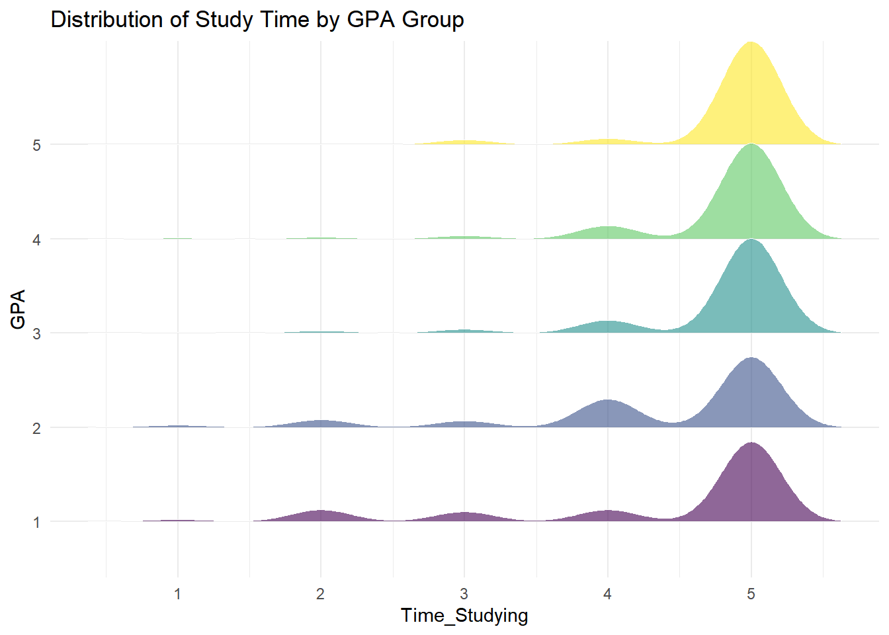
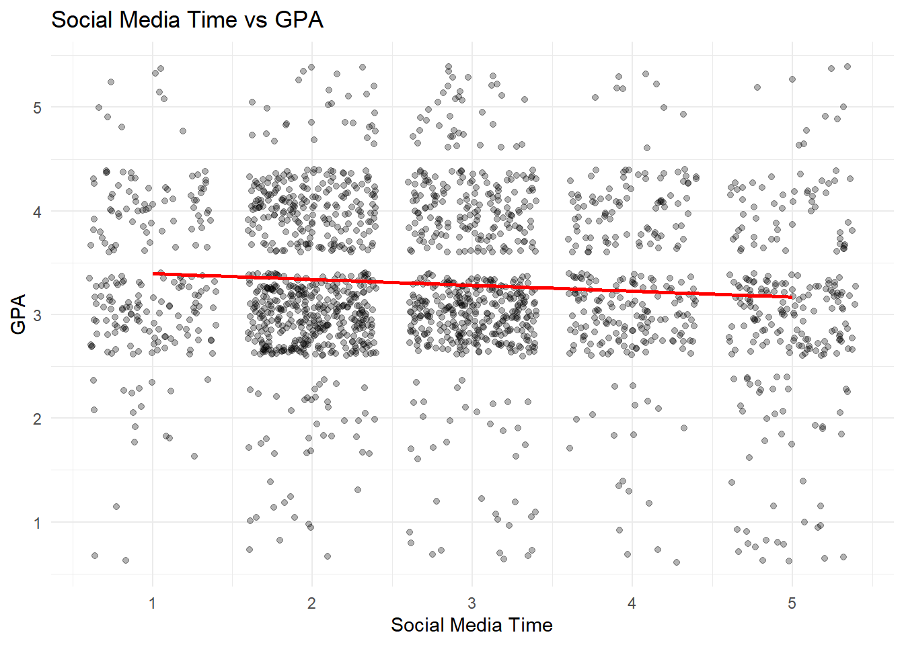
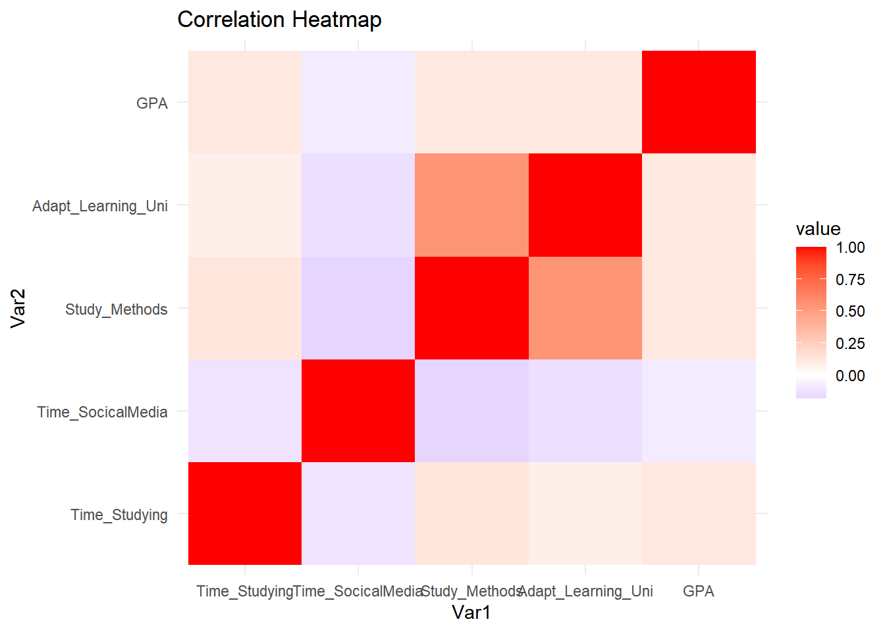
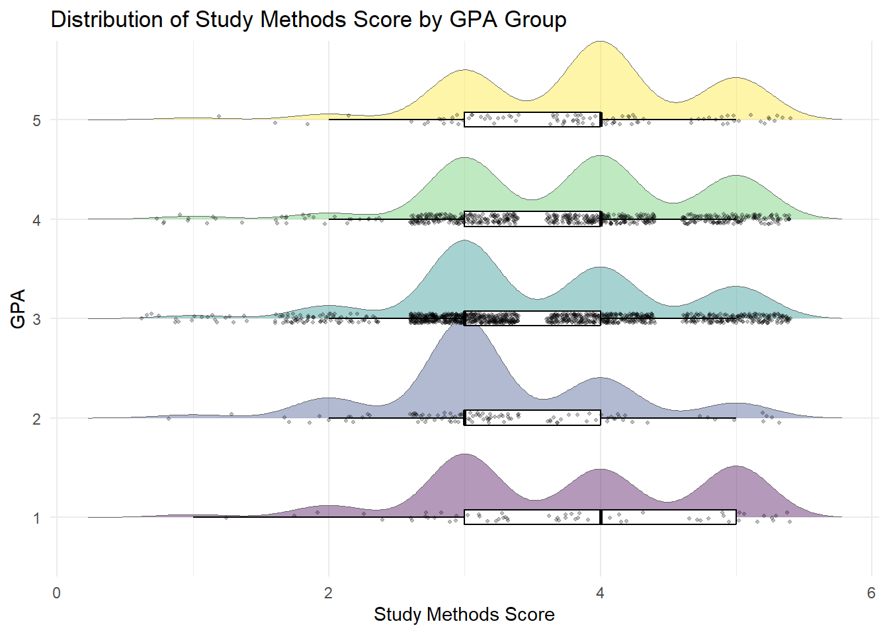
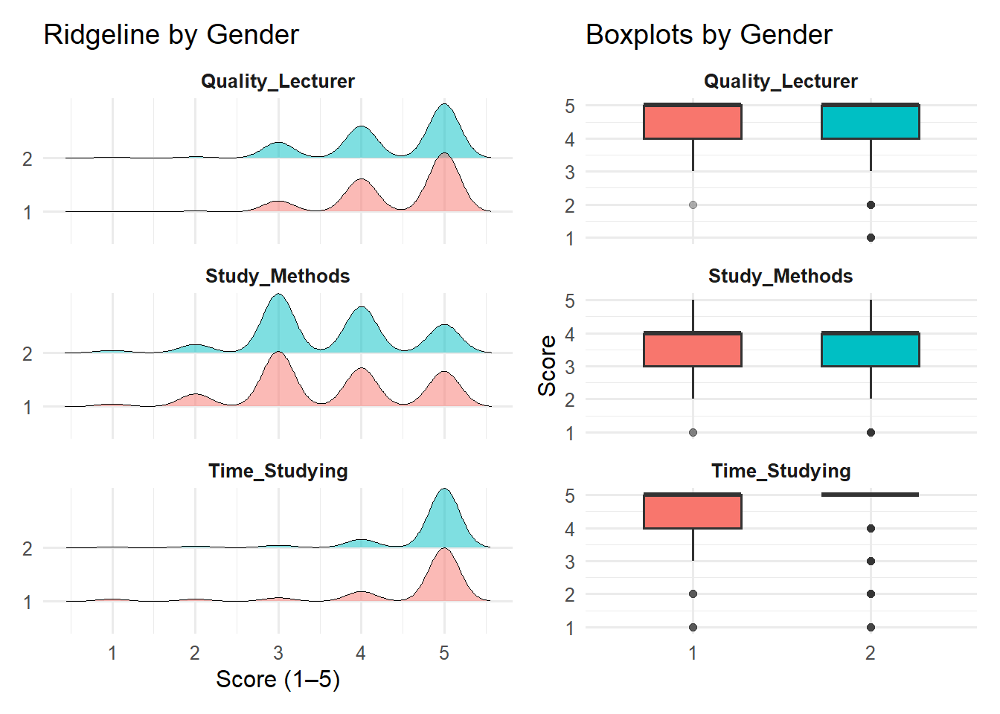

Code
library("pacman")
suppressWarnings(library("lubridate"))
library(readr)JIN QINHAO
For a long time, students’ learning outcomes have always been a very important topic. According to existing research, students’ academic performance is not only related to personal factors but also influenced by multiple factors such as family background, teacher support, and school resources.
Students’ learning motivation, teachers’ teaching ability, the campus support system environment and the rationality of course arrangement will all have an impact on students’ learning outcomes. In the information age, against the backdrop of digitalization, the educational environment is constantly evolving, and an increasing number of factors will become new variables. Therefore, systematic data analysis is needed to conduct the research.
In response to this, the VNU University of Education of Vietnam National University, Hanoi, conducted a systematic questionnaire survey. This data covers students’ demographic characteristics, their perception of the university learning environment, and academic performance indicators such as GPA.
Analyze and interpret the results and deduce decisions through descriptive methods and reasoning methods.
We load the following R packages using the function:pacman::p_load()
tidyverse: Core collection of R packages designed for data science
haven: To read in data formats such as SAS and SPSS
ggrepel: to provides geoms for ggplot2 to repel overlapping text labels
ggthemes: to use additional themes for ggplot2
patchwork: to prepare composite figure created using ggplot2
ggridges: to plot ridgeline plots
ggdist: for visualizations of distributions and uncertainty
scales: provides the internal scaling infrastructure used by ggplot2
For the purpose of this exercise, Database paper.csv will be used.
In the code chunk below, read_csv() of readr package is used to import Exam_data.csv into R and saved it into a tibble data.frame.
First, we need to check the data to see how many rows and columns it has, as well as the types of the variables.
Rows: 2,170
Columns: 22
$ Year <dbl> 5, 5, 5, 5, 5, 5, 5, 5, 5, 5, 5, 5, 5, 5, 5, 5, 5, …
$ Gender <dbl> 2, 1, 2, 2, 1, 2, 2, 2, 2, 2, 1, 2, 2, 2, 2, 2, 2, …
$ Policy_Stu <dbl> 2, 2, 2, 2, 1, 2, 2, 2, 2, 2, 2, 2, 2, 1, 2, 2, 2, …
$ Minority_Stu <dbl> 2, 2, 2, 2, 2, 2, 2, 2, 2, 2, 2, 2, 2, 2, 2, 2, 2, …
$ Poor_Stu <dbl> 2, 2, 2, 2, 2, 2, 2, 2, 2, 2, 2, 2, 2, 2, 2, 2, 2, …
$ Father_Edu <dbl> 4, 3, 4, 5, 2, 5, 6, 5, 5, 5, 3, 3, 3, 3, 3, 4, 5, …
$ Mother_Edu <dbl> 4, 3, 4, 4, 3, 5, 5, 4, 5, 4, 3, 3, 3, 4, 3, 4, 5, …
$ Father_Occupation <dbl> 2, 2, 1, 1, 3, 1, 1, 5, 1, 3, 3, 3, 3, 3, 2, 2, 4, …
$ Mother_Occupation <dbl> 3, 4, 2, 1, 3, 2, 4, 3, 1, 3, 3, 3, 3, 3, 2, 2, 4, …
$ Time_Friends <dbl> 2, 1, 1, 2, 1, 1, 2, 2, 1, 3, 2, 2, 2, 2, 2, 1, 3, …
$ Time_SocicalMedia <dbl> 2, 3, 2, 2, 2, 3, 2, 2, 2, 2, 2, 1, 2, 2, 2, 3, 4, …
$ Time_Studying <dbl> 5, 5, 5, 5, 1, 2, 5, 5, 5, 5, 5, 5, 5, 1, 5, 5, 5, …
$ GPA <dbl> 4, 3, 4, 4, 4, 4, 3, 5, 5, 3, 3, 4, 4, 3, 5, 4, 4, …
$ Adapt_Learning_Uni <dbl> 4, 3, 4, 4, 5, 4, 4, 4, 4, 3, 4, 4, 4, 5, 4, 4, 5, …
$ Study_Methods <dbl> 4, 3, 4, 4, 5, 4, 4, 4, 4, 4, 4, 4, 4, 5, 4, 3, 5, …
$ SupportOf_Uni <dbl> 3, 3, 4, 5, 5, 5, 5, 5, 4, 5, 4, 4, 4, 5, 4, 4, 5, …
$ SupportOf_Lec <dbl> 4, 4, 4, 5, 5, 4, 5, 4, 4, 5, 4, 4, 4, 5, 4, 4, 5, …
$ Facilitie_Uni <dbl> 4, 4, 3, 5, 5, 5, 5, 4, 4, 5, 4, 4, 4, 5, 4, 3, 5, …
$ Quality_Lecturer <dbl> 4, 3, 4, 5, 5, 5, 4, 5, 5, 5, 4, 4, 4, 5, 4, 4, 5, …
$ TrainingCurriculum <dbl> 4, 3, 4, 4, 5, 4, 5, 4, 4, 5, 4, 4, 4, 5, 4, 3, 5, …
$ Competitive_Class <dbl> 3, 3, 4, 4, 4, 3, 4, 3, 4, 4, 4, 4, 4, 5, 4, 4, 5, …
$ InfuenceF_Friends <dbl> 3, 4, 4, 4, 5, 3, 5, 4, 4, 4, 4, 4, 4, 5, 4, 5, 4, … Year Gender Policy_Stu Minority_Stu Poor_Stu
Min. :3.000 Min. :1.000 Min. :1.000 Min. :1.000 Min. :1.00
1st Qu.:4.000 1st Qu.:2.000 1st Qu.:1.000 1st Qu.:2.000 1st Qu.:2.00
Median :5.000 Median :2.000 Median :2.000 Median :2.000 Median :2.00
Mean :4.672 Mean :1.889 Mean :1.647 Mean :1.941 Mean :1.96
3rd Qu.:5.000 3rd Qu.:2.000 3rd Qu.:2.000 3rd Qu.:2.000 3rd Qu.:2.00
Max. :5.000 Max. :2.000 Max. :2.000 Max. :2.000 Max. :2.00
Father_Edu Mother_Edu Father_Occupation Mother_Occupation
Min. :1.000 Min. :1.000 Min. :1.000 Min. :1.000
1st Qu.:3.000 1st Qu.:3.000 1st Qu.:2.000 1st Qu.:2.000
Median :4.000 Median :4.000 Median :3.000 Median :3.000
Mean :3.747 Mean :3.664 Mean :2.484 Mean :2.498
3rd Qu.:5.000 3rd Qu.:5.000 3rd Qu.:3.000 3rd Qu.:3.000
Max. :6.000 Max. :6.000 Max. :5.000 Max. :5.000
Time_Friends Time_SocicalMedia Time_Studying GPA
Min. :1.000 Min. :1.000 Min. :1.000 Min. :1.0
1st Qu.:1.000 1st Qu.:2.000 1st Qu.:5.000 1st Qu.:3.0
Median :2.000 Median :3.000 Median :5.000 Median :3.0
Mean :2.274 Mean :2.836 Mean :4.719 Mean :3.3
3rd Qu.:3.000 3rd Qu.:4.000 3rd Qu.:5.000 3rd Qu.:4.0
Max. :5.000 Max. :5.000 Max. :5.000 Max. :5.0
Adapt_Learning_Uni Study_Methods SupportOf_Uni SupportOf_Lec
Min. :1.000 Min. :1.000 Min. :1.000 Min. :1.000
1st Qu.:3.000 1st Qu.:3.000 1st Qu.:3.000 1st Qu.:4.000
Median :3.000 Median :4.000 Median :4.000 Median :4.000
Mean :3.502 Mean :3.662 Mean :4.001 Mean :4.186
3rd Qu.:4.000 3rd Qu.:4.000 3rd Qu.:5.000 3rd Qu.:5.000
Max. :5.000 Max. :5.000 Max. :5.000 Max. :5.000
Facilitie_Uni Quality_Lecturer TrainingCurriculum Competitive_Class
Min. :1.000 Min. :1.000 Min. :1.000 Min. :1.000
1st Qu.:3.000 1st Qu.:4.000 1st Qu.:4.000 1st Qu.:3.000
Median :4.000 Median :5.000 Median :4.000 Median :4.000
Mean :4.073 Mean :4.329 Mean :4.128 Mean :3.935
3rd Qu.:5.000 3rd Qu.:5.000 3rd Qu.:5.000 3rd Qu.:5.000
Max. :5.000 Max. :5.000 Max. :5.000 Max. :5.000
InfuenceF_Friends
Min. :1.000
1st Qu.:3.000
Median :4.000
Mean :3.831
3rd Qu.:5.000
Max. :5.000 The second step is to check if there are any duplicate values in the data. If there are, delete them.
The third step is to check whether the data contains NA/None
Year Gender Policy_Stu Minority_Stu
0 0 0 0
Poor_Stu Father_Edu Mother_Edu Father_Occupation
0 0 0 0
Mother_Occupation Time_Friends Time_SocicalMedia Time_Studying
0 0 0 0
GPA Adapt_Learning_Uni Study_Methods SupportOf_Uni
0 0 0 0
SupportOf_Lec Facilitie_Uni Quality_Lecturer TrainingCurriculum
0 0 0 0
Competitive_Class InfuenceF_Friends
0 0 Ridgeline Density Plot
Each layer represents the distribution of study time for a GPA group (1–5).
The height and width of the curve represent the data density at that time level.
The more the curve is concentrated to the right, the higher the study time of this group is.
library(tidyverse)
library(ggridges)
Exam %>%
mutate(
GPA = factor(GPA, ordered = TRUE),
Time_Studying = as.numeric(Time_Studying)
) %>%
ggplot(aes(x = Time_Studying, y = GPA, fill = GPA)) +
geom_density_ridges(
scale = 1.1,
alpha = 0.6,
color = "white",
linewidth = 0.2
) +
labs(
title = "Distribution of Study Time by GPA Group",
x = "Time_Studying",
y = "GPA"
) +
theme_minimal() +
theme(legend.position = "none")
Conclusion:
It can be clearly seen from the graph that as the GPA grade increases, the distribution of study time shifts to the right overall. The high GPA group (4–5) has a significantly higher density in the study time score range of 4–5, indicating a higher and more concentrated level of study input. The low GPA group (1–2) has a more dispersed distribution, with a certain proportion also in the medium and low study time intervals. The overall trend shows that study time is positively correlated with GPA, but there is still overlap in the distribution, indicating that although study time is an important factor, it is not the only variable determining academic performance.
Based on the research data, we choose to use a scatter plot and a smooth line to study the relationship between Time_SocialMedia and GPA.
Components of a chart:
Scatter plot: Each point represents a student’s social media usage time and corresponding GPA.
The red smooth line: It indicates the overall trend change and is used to observe the direction of the relationship between two variables.
GPA 1-5 :
- Under 2.0 – Poor (1)
- From 2.0 to lower 2.5 – Average (2)
- From 2.5 to lower 3.2 – Fair (3)
- From 3.2 to lower 3.6 – Good (4)
- Over 3.6 – Excellent (5)
Time_SocialMedia 1-5 :
- under 1 hour (1)
- from 1 to lower 2 hours (2)
- from 2 to lower 3 hours (3)
- from 3 to lower 4 hours (4)
- over 4 hours (5)

Conclusion:The chart shows a slight negative correlation between social media usage time and GPA. As the usage time increases from 1 hour to 5 hours, the average GPA slightly decreases, especially when it exceeds 4 hours. However, the GPA distribution within each time period is relatively scattered, with high and low-scoring students present in different usage durations, indicating that the impact of social media usage time on academic performance is limited. Overall, the correlation between the two is weak, and social media time is not a key factor in determining GPA. Further analysis combining other variables is still needed
The horizontal axis (Var1) and the vertical axis (Var2) represent the five variables involved in the analysis:
Time_Studying
Time_SocialMedia）
Study_Methods
Adapt_Learning_Unit
GPA
Color Gradient (Value)
Red: Strong positive correlation (close to 1)
Light color: Weak correlation
Purpleish: negative correlation or close to 0
Diagonal: The value of 1 on the diagonal indicates that the variable is perfectly correlated with itself.
library(reshape2)
num_data <- Exam %>%
select(Time_Studying,
Time_SocicalMedia,
Study_Methods,
Adapt_Learning_Uni,
GPA)
cor_mat <- cor(num_data)
melt(cor_mat) %>%
ggplot(aes(Var1, Var2, fill = value)) +
geom_tile() +
scale_fill_gradient2(low = "blue", high = "red", mid = "white") +
theme_minimal() +
labs(title = "Correlation Heatmap")
Conclusion:
Study_Methods has a strong correlation with Adapt_Learning_Uni, indicating that good study methods are usually accompanied by high adaptability. GPA is positively correlated with Study_Methods and Adapt_Learning_Uni, suggesting that learning strategies and adaptability have a positive impact on academic performance. The correlation between Time_SocialMedia and GPA is relatively weak, supporting the conclusion of a “weak negative correlation” in the previous figure. There is a certain positive correlation between Time_Studying and GPA, but the intensity is not high, indicating that simply increasing study time may not significantly improve academic performance. Overall, the quality of learning (methods and adaptability) is more crucial than the mere amount of time invested.
Given that a single box plot can only show the difference in medians, while a ridge plot can observe whether the distribution has shifted, whether it is multimodal, etc., the combined plot can simultaneously display density structure, medians, and so on.
Ridgeline Plot Each layer represents the distribution of learning method scores for a GPA group. The higher and wider the curve, the greater the data density in that score range.
Box plot Overlaid on each ridge plot, it shows the median and interquartile range, used to compare the central tendency and dispersion of different GPA groups.
Jitter Scatter Plot It represents the actual score data of each student, avoiding overlap to present the original distribution.
X-axis:-Study Methods Score
- Not at all (1)
- Little (2)
- Moderate (3)
- Quite (4)
-Very (5)
Vertical axis: GPA 1-5 :
- Under 2.0 – Poor (1)
- From 2.0 to lower 2.5 – Average (2)
- From 2.5 to lower 3.2 – Fair (3)
- From 3.2 to lower 3.6 – Good (4)
- Over 3.6 – Excellent (5)
library(tidyverse)
library(ggridges)
Exam %>%
mutate(GPA = factor(GPA, ordered = TRUE)) %>%
ggplot(aes(x = Study_Methods,
y = GPA,
fill = GPA)) +
# 山脊密度
geom_density_ridges(
alpha = 0.4,
scale = 1,
color = "grey40",
linewidth = 0.3
) +
# 箱线图
geom_boxplot(
width = 0.15,
outlier.shape = NA,
fill = "white",
color = "black"
) +
# 抖动散点
geom_jitter(
height = 0.05,
alpha = 0.25,
size = 0.8
) +
theme_minimal() +
theme(legend.position = "none") +
labs(
title = "Distribution of Study Methods Score by GPA Group",
x = "Study Methods Score",
y = "GPA"
)
Conclusion：It can be clearly observed from the graph that the higher the GPA, the more the distribution of learning method scores leans towards the high-score range on the right. The median of the high GPA group (4–5) is higher and the distribution is more concentrated, indicating that their learning strategies are more mature and stable. The scores of the low GPA group (1–2) are generally lower and have a larger fluctuation range, suggesting that their learning methods are less stable or less efficient. The overall trend indicates that the quality of learning methods has a strong positive correlation with academic performance. Compared with the simple investment of time, learning strategies may be the key factor affecting grades.
Introduction to Chart Components Left side：
Each layer represents the score distribution of a gender group.
The higher and wider the curve, the more concentrated the data in that score range.
Show separately: Quality of Lecturers (Teacher Quality) Study Methods ，Time Spent on Studying
Quality_Lecturer：
- Not at all (1)
- Little (2)
- Moderate (3)
- Quite (4)
Very (5)
Study Methods：
- Not at all (1)
- Little (2)
- Moderate (3)
- Quite (4)
- Very (5)
- under 2 hours (1)
- from 2 to lower 4 hours (2)
- from 4 to lower 6 hours (3)
- from 6 to lower 8 hours (4)
- over 8 hour (5)
Right side:
Boxplot Display the median, interquartile range and outliers.
Used to compare the central tendency and dispersion of each variable between the two sexes.
library(ggridges)
Exam_ridge <- Exam %>%
select(Gender, Quality_Lecturer, Study_Methods, Time_Studying) %>%
pivot_longer(-Gender, names_to = "Variable", values_to = "Value") %>%
mutate(
Gender = factor(Gender),
Variable = factor(Variable,
levels = c("Quality_Lecturer","Study_Methods","Time_Studying")),
Value = as.numeric(Value)
)
p1 <- ggplot(Exam_ridge, aes(x = Value, y = Gender, fill = Gender)) +
geom_density_ridges(alpha = 0.5, scale = 1.1, linewidth = 0.3) +
facet_wrap(~Variable, ncol = 1) +
scale_x_continuous(breaks = 1:5) +
labs(title = "Ridgeline by Gender", x = "Score (1–5)", y = NULL) +
theme_minimal(base_size = 12) +
theme(legend.position = "none",
strip.text = element_text(face = "bold"))
p2 <- ggplot(Exam_ridge, aes(x = Gender, y = Value, fill = Gender)) +
geom_boxplot(width = 0.55, outlier.alpha = 0.2) +
facet_wrap(~Variable, ncol = 1) +
scale_y_continuous(breaks = 1:5) +
labs(title = "Boxplots by Gender", x = NULL, y = "Score") +
theme_minimal(base_size = 12) +
theme(legend.position = "none",
strip.text = element_text(face = "bold"))
p1 + p2 + plot_layout(widths = c(1.2, 1))
conclusion:
Quality_Lecturer: The overall scores given by both genders are relatively high, with a distribution that is close and not significantly different, indicating that the evaluation of teachers’ quality is becoming more consistent.
Study_Methods :The median of gender 1 is slightly higher and the distribution is more concentrated, indicating that this group is generally better in the evaluation of learning methods.
Time_Studying: The two groups were mainly concentrated in the high-score range (4–5), with a small difference, indicating that the time spent on learning was similar.
Overall, there are certain differences in learning methods between genders, but the influence on teaching evaluation and study time is limited. The degree of difference is not significant, falling within the range of moderate to weak differences.
Left: Box Plot (Distribution of Study Methods by GPA)
The box represents the interquartile range.
The median line represents the central tendency.
Outliers indicate individual extreme ratings.
X: GPA 1-5 :
- Under 2.0 – Poor (1)
- From 2.0 to lower 2.5 – Average (2)
- From 2.5 to lower 3.2 – Fair (3)
- From 3.2 to lower 3.6 – Good (4)
- Over 3.6 – Excellent (5)
- Not at all (1)
- Little (2)
- Moderate (3)
- Quite (4)
- Very (5)
It is used to compare the distribution differences in the scores of learning methods among different GPA groups.
Right side: Proportion of Study Levels by GPA (Heatmap)
The depth of the color indicates the proportion of the learning investment level within the GPA group.
The darker the color, the higher the proportion.
X: GPA
Y: Study Level
To observe the structural changes in the intensity of learning investment among different GPA groups.
p2 <- ggplot(heat_data,
aes(x = GPA,
y = Study_Level,
fill = prop)) +
geom_tile(color = "white") +
scale_fill_gradient(low = "#dceaf6",
high = "#2c7fb8",
labels = scales::percent) +
theme_minimal() +
labs(
title = "Proportion of Study Level by GPA",
x = "GPA Group",
y = "Study Level",
fill = "Proportion"
)Conclusion:
From the box plot on the left, it can be seen that as the GPA grade increases, the median score of learning methods gradually rises. The high GPA group (4–5) has a higher overall score and a more concentrated distribution. The heat map on the right shows that the proportion of “High” learning engagement in the high GPA group is significantly higher, while the “Low” engagement proportion is relatively larger in the low GPA group. The overall trend indicates that both learning strategies and learning intensity have a positive relationship with academic performance, and the improvement in the score of learning methods has a relatively consistent change trend with the improvement in grades.
In this exercise, we conducted a relatively comprehensive visual analysis to study the relationship between learning behavior and academic performance, among other aspects. During this process, we utilized various methods such as scatter plots, ridge plots, box plots, and heat maps to explore the relationships among different PGA groups, learning methods, learning time, and other variables.
The analysis revealed that efficient learning methods and high levels of learning engagement are positively correlated with excellent academic performance. There is only a weak negative correlation between social media usage and GPA. Therefore, parents might consider allowing their children some relaxation time in moderation. More importantly, this exercise reinforced my understanding of choosing visualization methods based on data types and analysis purposes. It enabled me to better grasp how to construct visualization structures to effectively convey research findings.
Overall, this project enhanced my analytical reasoning skills and strengthened my proficiency in using R language and visualization techniques.
Kam, Tin Seong. (2023). Visualising Distribution. R for Visual Analytics. https://r4va.netlify.app/chap09
https://akalestale.netlify.app/take-home_ex/take-home_ex01/take-home_ex01
https://jingyi-vaa.netlify.app/take-home_ex/take-home_ex01/take-home_ex01
https://isss608-jayageorge.netlify.app/take-home_ex/take-home_ex01/take-home_ex01
https://akalestale.netlify.app/take-home_ex/take-home_ex01/take-home_ex01
---
title: "Take Home Exercise 1"
author: "JIN QINHAO"
format:
html:
toc: true
toc-depth: 3
code-fold: true
code-tools: true
page-layout: full
execute:
warning: false
message: false
---
# Visual-driven investigation and analysis:
# Dataset of factors affecting learning outcomes of students at the University of Education,Vietnam National University, Hanoi
## **1 Introduction**
### **1.1 Background**
For a long time, students' learning outcomes have always been a very important topic. According to existing research, students' academic performance is not only related to personal factors but also influenced by multiple factors such as family background, teacher support, and school resources.
Students' learning motivation, teachers' teaching ability, the campus support system environment and the rationality of course arrangement will all have an impact on students' learning outcomes. In the information age, against the backdrop of digitalization, the educational environment is constantly evolving, and an increasing number of factors will become new variables. Therefore, systematic data analysis is needed to conduct the research.
In response to this, the VNU University of Education of Vietnam National University, Hanoi, conducted a systematic questionnaire survey. This data covers students' demographic characteristics, their perception of the university learning environment, and academic performance indicators such as GPA.
### **1.2 Our Task**
Analyze and interpret the results and deduce decisions through descriptive methods and reasoning methods.
## **2 Getting Started**
### **2.1 Setting the Analytical Tools**
We load the following R packages using the function:`pacman::p_load()`
- **tidyverse**: Core collection of R packages designed for data science
- **haven**: To read in data formats such as SAS and SPSS
- **ggrepel**: to provides geoms for **ggplot2** to repel overlapping text labels
- **ggthemes**: to use additional themes for **ggplot2**
- **patchwork**: to prepare composite figure created using **ggplot2**
- **ggridges**: to plot ridgeline plots
- **ggdist**: for visualizations of distributions and uncertainty
- **scales**: provides the internal scaling infrastructure used by **ggplot2**
```{r}
library("pacman")
suppressWarnings(library("lubridate"))
library(readr)
```
```{r}
pacman::p_load(tidyverse, haven,
ggrepel, ggthemes,
ggridges, ggdist,colorspace,ggdist,
patchwork, scales,janitor)
```
### **2.2 Importing Data**
For the purpose of this exercise, Database paper.csv will be used.
In the code chunk below, read_csv() of readr package is used to import Exam_data.csv into R and saved it into a tibble data.frame.
```{r}
Exam <- read_csv("data/Database paper.csv")
```
### **2.3 Data Cleaning**
First, we need to check the data to see how many rows and columns it has, as well as the types of the variables.
```{r}
glimpse(Exam)
summary(Exam)
```
The second step is to check if there are any duplicate values in the data. If there are, delete them.
```{r}
sum(duplicated(Exam))
```
```{r}
Exam <- distinct(Exam)
```
The third step is to check whether the data contains NA/None
```{r}
colSums(is.na(Exam))
```
## **3** Visualization
### 3.1Study the relationship between study time and GPA
Ridgeline Density Plot
Each layer represents the distribution of study time for a GPA group (1–5).
The height and width of the curve represent the data density at that time level.
The more the curve is concentrated to the right, the higher the study time of this group is.
```{r}
library(tidyverse)
library(ggridges)
Exam %>%
mutate(
GPA = factor(GPA, ordered = TRUE),
Time_Studying = as.numeric(Time_Studying)
) %>%
ggplot(aes(x = Time_Studying, y = GPA, fill = GPA)) +
geom_density_ridges(
scale = 1.1,
alpha = 0.6,
color = "white",
linewidth = 0.2
) +
labs(
title = "Distribution of Study Time by GPA Group",
x = "Time_Studying",
y = "GPA"
) +
theme_minimal() +
theme(legend.position = "none")
```
Conclusion:
It can be clearly seen from the graph that as the GPA grade increases, the distribution of study time shifts to the right overall. The high GPA group (4–5) has a significantly higher density in the study time score range of 4–5, indicating a higher and more concentrated level of study input. The low GPA group (1–2) has a more dispersed distribution, with a certain proportion also in the medium and low study time intervals. The overall trend shows that study time is positively correlated with GPA, but there is still overlap in the distribution, indicating that although study time is an important factor, it is not the only variable determining academic performance.
### 3.2 Use a scatter plot and a smooth line to study: Time_SocialMedia vs GPA
Based on the research data, we choose to use a scatter plot and a smooth line to study the relationship between Time_SocialMedia and GPA.
Components of a chart:
- Scatter plot: Each point represents a student's social media usage time and corresponding GPA.
- The red smooth line: It indicates the overall trend change and is used to observe the direction of the relationship between two variables.
- GPA 1-5 :
- Under 2.0 – Poor (1)
- From 2.0 to lower 2.5 – Average (2)
- From 2.5 to lower 3.2 – Fair (3)
- From 3.2 to lower 3.6 – Good (4)
\- Over 3.6 – Excellent (5)
- Time_SocialMedia 1-5 :
- under 1 hour (1)
- from 1 to lower 2 hours (2)
- from 2 to lower 3 hours (3)
- from 3 to lower 4 hours (4)
\- over 4 hours (5)
```{r}
ggplot(Exam, aes(x = Time_SocicalMedia, y = GPA)) +
geom_jitter(alpha = 0.3) +
geom_smooth(method = "lm", color = "red", se = FALSE) +
theme_minimal() +
labs(
title = "Social Media Time vs GPA",
x = "Social Media Time",
y = "GPA"
)
```
Conclusion:The chart shows a slight negative correlation between social media usage time and GPA. As the usage time increases from 1 hour to 5 hours, the average GPA slightly decreases, especially when it exceeds 4 hours. However, the GPA distribution within each time period is relatively scattered, with high and low-scoring students present in different usage durations, indicating that the impact of social media usage time on academic performance is limited. Overall, the correlation between the two is weak, and social media time is not a key factor in determining GPA. Further analysis combining other variables is still needed
### 3.3 Use heat maps to study the relationship between multiple variables and GPA.
The horizontal axis (Var1) and the vertical axis (Var2) represent the five variables involved in the analysis:
- Time_Studying
- Time_SocialMedia）
- Study_Methods
- Adapt_Learning_Unit
- GPA
Color Gradient (Value)
- Red: Strong positive correlation (close to 1)
- Light color: Weak correlation
- Purpleish: negative correlation or close to 0
Diagonal: The value of 1 on the diagonal indicates that the variable is perfectly correlated with itself.
```{r}
library(reshape2)
num_data <- Exam %>%
select(Time_Studying,
Time_SocicalMedia,
Study_Methods,
Adapt_Learning_Uni,
GPA)
cor_mat <- cor(num_data)
melt(cor_mat) %>%
ggplot(aes(Var1, Var2, fill = value)) +
geom_tile() +
scale_fill_gradient2(low = "blue", high = "red", mid = "white") +
theme_minimal() +
labs(title = "Correlation Heatmap")
```
Conclusion:
Study_Methods has a strong correlation with Adapt_Learning_Uni, indicating that good study methods are usually accompanied by high adaptability. GPA is positively correlated with Study_Methods and Adapt_Learning_Uni, suggesting that learning strategies and adaptability have a positive impact on academic performance. The correlation between Time_SocialMedia and GPA is relatively weak, supporting the conclusion of a "weak negative correlation" in the previous figure. There is a certain positive correlation between Time_Studying and GPA, but the intensity is not high, indicating that simply increasing study time may not significantly improve academic performance. Overall, the quality of learning (methods and adaptability) is more crucial than the mere amount of time invested.
### 3.4 Study the influence of Study Methods on GPA through combination charts.
Given that a single box plot can only show the difference in medians, while a ridge plot can observe whether the distribution has shifted, whether it is multimodal, etc., the combined plot can simultaneously display density structure, medians, and so on.
- Ridgeline Plot Each layer represents the distribution of learning method scores for a GPA group. The higher and wider the curve, the greater the data density in that score range.
- Box plot Overlaid on each ridge plot, it shows the median and interquartile range, used to compare the central tendency and dispersion of different GPA groups.
- Jitter Scatter Plot It represents the actual score data of each student, avoiding overlap to present the original distribution.
- X-axis:-Study Methods Score
\- Not at all (1)
\- Little (2)
- Moderate (3)
- Quite (4)
-Very (5)
- Vertical axis: GPA 1-5 :
- Under 2.0 – Poor (1)
- From 2.0 to lower 2.5 – Average (2)
- From 2.5 to lower 3.2 – Fair (3)
- From 3.2 to lower 3.6 – Good (4)
\- Over 3.6 – Excellent (5)
```{r}
library(tidyverse)
library(ggridges)
Exam %>%
mutate(GPA = factor(GPA, ordered = TRUE)) %>%
ggplot(aes(x = Study_Methods,
y = GPA,
fill = GPA)) +
# 山脊密度
geom_density_ridges(
alpha = 0.4,
scale = 1,
color = "grey40",
linewidth = 0.3
) +
# 箱线图
geom_boxplot(
width = 0.15,
outlier.shape = NA,
fill = "white",
color = "black"
) +
# 抖动散点
geom_jitter(
height = 0.05,
alpha = 0.25,
size = 0.8
) +
theme_minimal() +
theme(legend.position = "none") +
labs(
title = "Distribution of Study Methods Score by GPA Group",
x = "Study Methods Score",
y = "GPA"
)
```
Conclusion：It can be clearly observed from the graph that the higher the GPA, the more the distribution of learning method scores leans towards the high-score range on the right. The median of the high GPA group (4–5) is higher and the distribution is more concentrated, indicating that their learning strategies are more mature and stable. The scores of the low GPA group (1–2) are generally lower and have a larger fluctuation range, suggesting that their learning methods are less stable or less efficient. The overall trend indicates that the quality of learning methods has a strong positive correlation with academic performance. Compared with the simple investment of time, learning strategies may be the key factor affecting grades.
### 3.5 Study the distribution of scores given by different genders in terms of teaching quality, learning methods and study time.
Introduction to Chart Components Left side：
- Each layer represents the score distribution of a gender group.
- The higher and wider the curve, the more concentrated the data in that score range.
- Show separately: Quality of Lecturers (Teacher Quality) Study Methods ，Time Spent on Studying
- Quality_Lecturer：
- Not at all (1)
- Little (2)
- Moderate (3)
- Quite (4)
- Very (5)
- Study Methods：
- Not at all (1)
- Little (2)
- Moderate (3)
- Quite (4)
\- Very (5)
- Time_Studying：
- under 2 hours (1)
- from 2 to lower 4 hours (2)
- from 4 to lower 6 hours (3)
- from 6 to lower 8 hours (4)
\- over 8 hour (5)
Right side:
Boxplot Display the median, interquartile range and outliers.
Used to compare the central tendency and dispersion of each variable between the two sexes.
```{r}
library(ggridges)
Exam_ridge <- Exam %>%
select(Gender, Quality_Lecturer, Study_Methods, Time_Studying) %>%
pivot_longer(-Gender, names_to = "Variable", values_to = "Value") %>%
mutate(
Gender = factor(Gender),
Variable = factor(Variable,
levels = c("Quality_Lecturer","Study_Methods","Time_Studying")),
Value = as.numeric(Value)
)
p1 <- ggplot(Exam_ridge, aes(x = Value, y = Gender, fill = Gender)) +
geom_density_ridges(alpha = 0.5, scale = 1.1, linewidth = 0.3) +
facet_wrap(~Variable, ncol = 1) +
scale_x_continuous(breaks = 1:5) +
labs(title = "Ridgeline by Gender", x = "Score (1–5)", y = NULL) +
theme_minimal(base_size = 12) +
theme(legend.position = "none",
strip.text = element_text(face = "bold"))
p2 <- ggplot(Exam_ridge, aes(x = Gender, y = Value, fill = Gender)) +
geom_boxplot(width = 0.55, outlier.alpha = 0.2) +
facet_wrap(~Variable, ncol = 1) +
scale_y_continuous(breaks = 1:5) +
labs(title = "Boxplots by Gender", x = NULL, y = "Score") +
theme_minimal(base_size = 12) +
theme(legend.position = "none",
strip.text = element_text(face = "bold"))
p1 + p2 + plot_layout(widths = c(1.2, 1))
```
conclusion:
Quality_Lecturer: The overall scores given by both genders are relatively high, with a distribution that is close and not significantly different, indicating that the evaluation of teachers' quality is becoming more consistent.
Study_Methods :The median of gender 1 is slightly higher and the distribution is more concentrated, indicating that this group is generally better in the evaluation of learning methods.
Time_Studying: The two groups were mainly concentrated in the high-score range (4–5), with a small difference, indicating that the time spent on learning was similar.
Overall, there are certain differences in learning methods between genders, but the influence on teaching evaluation and study time is limited. The degree of difference is not significant, falling within the range of moderate to weak differences.
### 3.6 The distribution differences in learning behaviors among different GPA groups and the proportion structure of high and low learning levels were studied.
Left: Box Plot (Distribution of Study Methods by GPA)
- The box represents the interquartile range.
- The median line represents the central tendency.
- Outliers indicate individual extreme ratings.
- X: GPA 1-5 :
- Under 2.0 – Poor (1)
- From 2.0 to lower 2.5 – Average (2)
- From 2.5 to lower 3.2 – Fair (3)
- From 3.2 to lower 3.6 – Good (4)
\- Over 3.6 – Excellent (5)
- Y: Study Methods Score
- Not at all (1)
- Little (2)
- Moderate (3)
- Quite (4)
\- Very (5)
It is used to compare the distribution differences in the scores of learning methods among different GPA groups.
Right side: Proportion of Study Levels by GPA (Heatmap)
The depth of the color indicates the proportion of the learning investment level within the GPA group.
The darker the color, the higher the proportion.
X: GPA
Y: Study Level
To observe the structural changes in the intensity of learning investment among different GPA groups.
```{r}
library(tidyverse)
library(ggridges)
library(patchwork)
Exam2 <- Exam %>%
mutate(
GPA = factor(GPA, ordered = TRUE),
Study_Level = case_when(
Study_Methods <= 2 ~ "Low",
Study_Methods == 3 ~ "Moderate",
Study_Methods >= 4 ~ "High"
)
)
```
```{r}
p1 <- ggplot(Exam2,
aes(x = GPA,
y = Study_Methods,
fill = GPA)) +
geom_boxplot(alpha = 0.8) +
theme_minimal() +
theme(legend.position = "none") +
labs(
title = "Distribution of Study Methods by GPA",
x = "GPA Group",
y = "Study Methods Score"
)
```
```{r}
heat_data <- Exam2 %>%
group_by(GPA, Study_Level) %>%
summarise(n = n()) %>%
mutate(prop = n / sum(n))
```
```{r}
p2 <- ggplot(heat_data,
aes(x = GPA,
y = Study_Level,
fill = prop)) +
geom_tile(color = "white") +
scale_fill_gradient(low = "#dceaf6",
high = "#2c7fb8",
labels = scales::percent) +
theme_minimal() +
labs(
title = "Proportion of Study Level by GPA",
x = "GPA Group",
y = "Study Level",
fill = "Proportion"
)
```
```{r}
p1 + p2 + plot_layout(widths = c(1.2, 1))
```
Conclusion:
From the box plot on the left, it can be seen that as the GPA grade increases, the median score of learning methods gradually rises. The high GPA group (4–5) has a higher overall score and a more concentrated distribution. The heat map on the right shows that the proportion of "High" learning engagement in the high GPA group is significantly higher, while the "Low" engagement proportion is relatively larger in the low GPA group. The overall trend indicates that both learning strategies and learning intensity have a positive relationship with academic performance, and the improvement in the score of learning methods has a relatively consistent change trend with the improvement in grades.
## 4 Summary and conclusion
In this exercise, we conducted a relatively comprehensive visual analysis to study the relationship between learning behavior and academic performance, among other aspects. During this process, we utilized various methods such as scatter plots, ridge plots, box plots, and heat maps to explore the relationships among different PGA groups, learning methods, learning time, and other variables.
The analysis revealed that efficient learning methods and high levels of learning engagement are positively correlated with excellent academic performance. There is only a weak negative correlation between social media usage and GPA. Therefore, parents might consider allowing their children some relaxation time in moderation. More importantly, this exercise reinforced my understanding of choosing visualization methods based on data types and analysis purposes. It enabled me to better grasp how to construct visualization structures to effectively convey research findings.
Overall, this project enhanced my analytical reasoning skills and strengthened my proficiency in using R language and visualization techniques.
## 5 Reference
Kam, Tin Seong. (2023). Visualising Distribution. *R for Visual Analytics.* <https://r4va.netlify.app/chap09>
<https://akalestale.netlify.app/take-home_ex/take-home_ex01/take-home_ex01>
<https://jingyi-vaa.netlify.app/take-home_ex/take-home_ex01/take-home_ex01>
<https://isss608-jayageorge.netlify.app/take-home_ex/take-home_ex01/take-home_ex01>
<https://akalestale.netlify.app/take-home_ex/take-home_ex01/take-home_ex01>
##
#